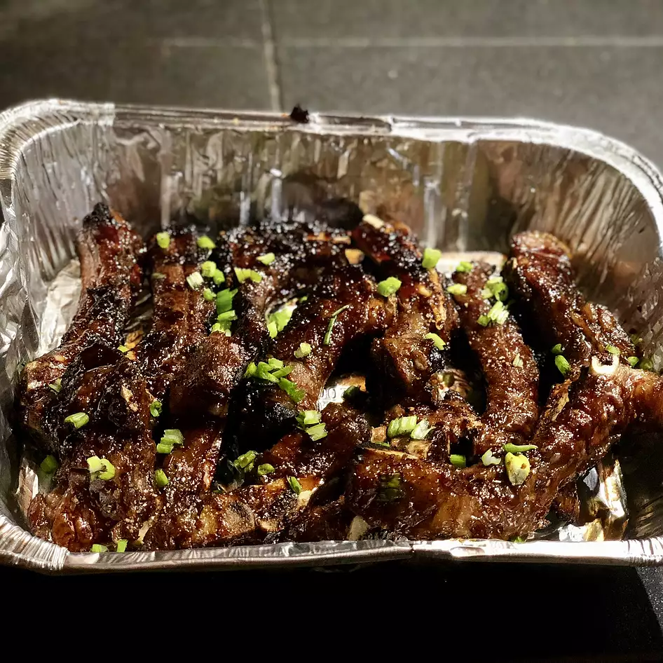

Kalbi beef Korean-style Recipe

Description
Kalbi is a staple of Korean fine dining but is too expensive in restaurants. It is simple to make at home and will leave your guests asking for more. Total time includes marinating time. It's traditionally served sliced, rolled in romaine lettuce leaves with white rice, lightly browned garlic slices, and gochujang (Korean red pepper paste).
Making Kalbi takes three hours and 30 minutes. 15 minutes preparation, 15 minutes of actual cooking and additional 3 hours are required to finish this dish. This Kalbi dish will be able to serve four people.
Ingredients
- 3/4 cup soy sauce
- 3/4 cup brown sugar
- 3/4 cup water
- 2 green onions, chopped
- 1 garlic clove, minced
- 1 tablespoon Asian (toasted) sesame oil
- 2 pounds Korean-style short ribs (beef chuck flanken, cut 1/3 to 1/2 inch thick across bones)
Steps
- Stir together soy sauce, brown sugar, water, green onions, garlic, and sesame oil in a bowl until sugar has dissolved.
- Place ribs in a large resealable plastic bag. Pour marinade over ribs. Seal the bag and refrigerate for 3 hours to overnight.
- Preheat an outdoor grill for medium-high heat; lightly oil the grate.
- Remove ribs from the bag; shake off excess marinade and discard marinade. Grill ribs on the preheated grill until meat is still pink but not bloody nearest the bone, 5 to 7 minutes per side.